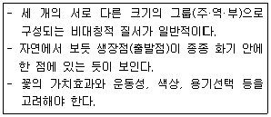
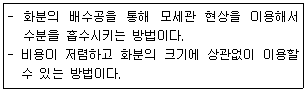
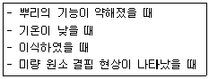
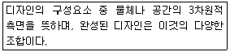
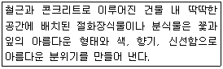
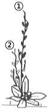

화훼장식기능사 (2011-02-13 기출문제)
1과목: 화훼장식재료
1. 화훼에 대한 설명으로 틀린 것은?
- 관상가치가 있는 모든 초본과 목본 식물을 포함한다.
- 노동과 자본 집약적이고 토지생산성이 높다.
- 종류와 품종이 다양하며 한 품종의 인기가 길다.
- 국내 수요가 크게 증가하고 있으나 일인당 꽃 소비액은 일본과 유럽보다 낮다.
(정답률: 73%)

2. 덩굴성이 아닌 식물은?
- 클레마티스
- 후박나무
- 인동덩굴
- 능소화
(정답률: 56%)
3. 숙근초로 내한성이 있는 것은?
- 거베라
- 군자란
- 아퀼레기아
- 아프리칸 바이올렛
(정답률: 34%)
4. 분화장식의 설명으로 틀린 것은?
- 천남성과 식물이나 접란 등의 관엽식물의 뿌리를 토양 대신에 물속에 넣어 키우는 것을 수경재배(Water culture)라 한다.
- 유리용기에 수생식물을 심고 한쪽으로 물고기를 넣어서 키우는 것을 비바리움(Vivarium)이라 한다.
- 접시처럼 넓고 깊이가 div은 용기에 식물을 심어 작은 정원을 만드는 것을 디시가든(Dish garden)이라고 한다.
- 바구니나 플라스틱분 등의 용기에 덩굴식물을 심어 아래로 늘어뜨리는 것을 걸이분(Hanging basket)이라고 한다.
(정답률: 91%)
5. 알뿌리 화초 중 덩이뿌리(괴근)로 번식하는 종류는?
- 칸나
- 튤립
- 수선화
- 달리아
(정답률: 69%)
6. 화훼의 원예학적 분류가 바르게 짝지어진 것은?
- 1,2년생 초화 - 거베라, 카네이션, 원추리
- 다년생 숙근초화 - 석죽, 라넌큘러스, 접시꽃
- 화목류 - 쟈스민, 익소라, 부겐빌레아
- 관엽식물 - 헤마리아, 카틀레야, 온시디움
(정답률: 33%)
7. 화훼장식용 철사에 관한 내용으로 틀린 것은?
- 소재에 맞는 철사 규격을 선정한다.
- 철사가 굵을수록 철사의 표준수치 수치는 커진다.
- 철사 지름의 크기에 따라 다양한 규격을 가지고 있다.
- 철사 규격은 꽃의 무게와 용도에 따라 선정한다.
(정답률: 98%)
8. 자연소재로 연중 구입이 가능하고, 염색이나 박피 등의 가공을 쉽게 할 수 있으며, 장식할 때 물이 필요 없는 소재로 가장 적당한 것은?
- 절화
- 절지
- 절엽
- 건조소재
(정답률: 90%)
9. 다음 중 지생란(地生蘭)이 아닌 것은?
- 건란
- 풍란
- 보세란
- 심비디움
(정답률: 54%)
10. 실내에서 분식물로 널리 사용되는 Ficus benjamina L.의 일반명은?
- 호야
- 싱고니움
- 벤자민 고무나무
- 디펜바키아
(정답률: 89%)
11. 화훼장식용 도구의 사용에 대한 설명으로 틀린 것은?
- 플로랄 테이프란 식물에 철사를 연결하여 줄기를 지지하였을 경우, 접착성으로 줄기와 철사의 접합을 돕는다.
- 라피아는 꽃다발을 단단하게 묶는데 사용한다.
- 워터픽은 플라스틱 제품으로서 그 속에 물을 넣어 식물을 꽂아 묶음 작업에 많이 사용한다.
- 전지가위는 리본, 직물, 종이의 절단에 사용한다.
(정답률: 94%)
12. 플로랄 폼에 대한 설명으로 틀린 것은?
- 오아시스(Oasis)는 플로랄 폼의 상품명이다.
- 생화용 플로랄 폼은 물을 충분히 흡수하도록 해야 하며 줄기를 꽂을 때는 플로랄 폼에 한 번에 꽂도록 한다.
- 생화용 플로랄 폼을 우레탄, 스티로폼으로 만들어진다.
- 생화용 플로랄 폼은 물이 빨리 흡수되도록 상제로 밀어 포화시켜서는 안 된다.
(정답률: 81%)
13. 관엽식물류가 아닌 것은?
- 아네모네
- 행운목
- 디펜바키아
- 팔손이
(정답률: 71%)
14. 1년초에 대한 설명으로 틀린 것은?
- 종자로부터 발아하여 1년 이내에 개화 및 결실하여 일생을 마치는 화훼를 말한다.
- 춘파 1년초와 추파 1년초로 나눈다.
- 봄에 파종하여 가을이나 그 이전에 꽃을 피우고 열매를 맺는 종류를 추파 1년초라고 한다.
- 추파 1년초는 팬지, 시네라리아, 칼세올라리아가 있다.
(정답률: 83%)
15. 열매를 감상할 수 있는 내음성 식물은?
- 철쭉
- 백량금
- 모란
- 군자란
(정답률: 73%)
16. 절화의 기부를 물속에서 자르는 가장 큰 이유는?
- 도관 내 기포발생 방지
- 절단면의 세균번식 방지
- 절단면의 상처를 최소화
- 도관의 면적 증대
(정답률: 88%)
17. 평행 디자인의 형태에 대한 설명으로 틀린 것은?
- 수직, 수평, 사선의 평행 테크닉이 표현된다.
- 평행 그래픽 디자인(Parallel graphic design)에서는 소재의 가치와 효과를 반드시 고려하지 않아도 가능하다.
- 평행 장식적 디자인(Parallel decorative design)은 풍성하고 화려하며 닫혀진 윤곽을 표현한다.
- 평행 시스템 디자인(Parallel system design)은 평행 그룹으로 음화적 공간을 갖지 않는 매스 구성이다.
(정답률: 31%)
18. 식물의 대사·호흡에 이용되는 당의 역할에 대한 설명으로 가장 거리가 먼 것은?
- 노화를 지연시킨다.
- 기공을 폐쇄하여 수분손실을 적게 한다.
- 삼투압을 높여서 영양분을 공급한다.
- 에틸렌을 합성한다.
(정답률: 86%)
19. 종자의 발아에 필수적인 환경조건은 아니지만 식물의 종류에 따라서는 발아에 중요한 영향을 미치는 것은?
- 충분한 산소
- 충분한 광선
- 충분한 수분공급
- 알맞은 온도
(정답률: 58%)
20. 신부장식에서 신부가 부케를 들 때의 내용으로 가장 거리가 먼 것은?
- 부케의 손잡이는 몸 선과 나란히 포컬 포인트(focal point)를 다소 위로 향하게 하면 아름답다.
- 부케는 양손으로 힘 있게 잡고 꽃의 표정은 아래를 보도록 한다.
- 자연줄기로 만든 부케나 소품으로 만든 부케는 편안한 모습으로 자연스럽게 드는 것이 매력적이다.
- 프레젠테이션(presentation)부케는 한 손으로 꽃을 안은 듯 들고 나머지 손은 꽃다발 줄기를 잡은 듯 가볍게 든다.
(정답률: 93%)
2과목: 화훼장식 제작 및 유지관리
21. 에틸렌(ethylene)에 대한 설명으로 옳은 것은?
- 무색·무취의 액체상 호르몬이다.
- 국화보다 카네이션이 에틸렌에 민감하게 반응한다.
- 식물의 노화억제 호르몬이다.
- 에틸렌에 대한 민감도는 고온에서 감소된다.
(정답률: 72%)
22. 절화보존제의 주성분이 아닌 것은?
- 살균제
- 살충제
- 당류
- 생장조절제
(정답률: 80%)
23. 100ppm의 1BA용액 250ml를 조제하기 위해서 순도 100%인 1BAQ를 넣는 양으로 옳은 것은? (단, 비중은 1이다.)
- 100ml
- 75ml
- 50ml
- 25ml
(정답률: 76%)
24. 장식적인 목적으로 강조를 하거나 주의를 끌 필요가 있을 때 꽃 재료를 묶는 꽃꽂이의 기법은?
- 밴딩(banding)
- 바인딩(bainding)
- 번들링(bundling)
- 레이어링(layering)
(정답률: 82%)
25. 작은 보석을 빽빽하게 배치하는데서 유래하여, 편평한 용기에 꽃, 잎, 줄기 등을 플로랄 폼이 보이지 않도록 조밀하게 배치하여 색과 질감을 대비시켜 구성하는 방법은?
- 뉴컨벤션 디자인
- 파베 디자인
- 폭포형 디자인
- 비더마이어 디자인
(정답률: 92%)
26. 토양의 종류와 그의 특성이 옳게 연결된 것은?
- 모래 - 배구성과 통기성이 좋고 보비력이 우수하다.
- 피트모스 - 물이끼를 건조시킨 것으로 난류의 재배에 이용된다.
- 배양토 - 나뭇잎을 완전히 썩힌 것으로 보수력과 보비력이 높다.
- 바크 - 나무껍질을 이용하여 발효, 살균처리 한 것으로 양난의 식재에 이용된다.
(정답률: 63%)
27. 서양의 디자인 양식 중 작품 안에 음화적 공간을 요구하며 명확한 선(Lines)이 강조되어 동양 꽃꽂이와 가장 유사한 디자인 양식은?
- 플레미시(flemish)
- 워터폴(waterfall)
- 포멀리니어(formal linear)
- 비더마이어(biedermeier)
(정답률: 73%)
28. 작품에 입체적인 깊이를 주기 위해 먼저 꽂은 소재의 근처에 똑같은 소재를 하나 더 꽂아 작품에 통일감과 입체감을 주는 기법은?
- 쉐도잉(Shadwing)
- 베일링(Veiling)
- 번칭(Bunching)
- 번들링(Bundling)
(정답률: 77%)
29. 원예용 특수 토양으로 거리가 먼 것은?
- 피트모스
- 펄라이트
- 버미큘라이트
- 찰흙
(정답률: 96%)
30. 절화장식의 기본 기술인 절화줄기의 고정에 사용하는 방법이 아닌 것은?
- 용기 안에 철망을 말아 넣어 철망의 구멍사이로 꽃과 나뭇가지를 고정하는 방법
- 소형 개별 워터튜브나 유리시험관을 이용하여 필요한 곳에 고정하는 방법
- 절화 줄기에 방수테이프를 붙여서 용기에 고정하는 방법
- 용기 내에 돌, 구슬, 자갈 등을 넣어 줄기를 그 사이에 넣어 고정하는 방법
(정답률: 67%)
31. 꽃꽂이 형태 중 줄기 배열에 의한 분류가 아닌 것은?
- 교차선 배열
- 수직선 배열
- 감는선 배열
- 병행선 배열
(정답률: 36%)
32. 다음과 같은 고려사항이 요구되는 유러피언 스타일(european style)의 디자인은?

- 식생형(Vegetative)
- 장식형(Decorative)
- 형 - 선형적 구성(Formal - linear)
- 병행형(Parallel)
(정답률: 85%)
33. 식물소재를 철사 등에 엮어서 길게 늘어뜨린 장식물로 기둥의 둘레를 감거나 문을 장식하는 데에 이용되는 화훼장식물을 무엇이라고 하는가?
- 오브제적 구성
- 부토니아
- 갈랜드
- 콜라주
(정답률: 87%)
34. 다음 설명하는 관수 방법으로 가장 적합한 것은?

- 파이프 관수
- 저면 관수
- 스크링쿨러 관수
- 점적 관수
(정답률: 88%)
35. 전통 유럽식 꽃꽂이 디자인으로 가장 거리가 먼 것은?
- 비더마이어 디자인(Biedermeier design)
- 밀 드 플레 디자인(Mille de fleurs design)
- 폭포형 디자인(Waterfall design)
- 풍경식 디자인(Landscape design)
(정답률: 78%)
36. 와이어에 플로랄 테이프를 감고 다시 그 위에 리본을 감은 후 와이어의 양 끝을 꼬아 숫자나 이니셜 모양을 만들어 활용할 수 있는 리본 작업은?
- 컬리큐스(Curlicues)
- 레인보우 워크(Rainbow work)
- 롤드 리본(Rolled ribbon)
- 스파클 보(Sparkle bow)
(정답률: 45%)
37. 절화 수명단축의 원인으로 가장 거리가 먼 것은?
- 높은 온도
- 높은 습도
- 에틸렌 발생
- 박테리아 등 미생물 번식
(정답률: 68%)
38. 다음의 상황에서 분식물에 시비하는 방법으로 가장 적합한 것은?

- 엽면시비(葉面施肥)
- 저면시비(低面施肥)
- 탄산시비(炭酸施肥)
- 표면시비(表面施肥)
(정답률: 81%)
39. 백합처럼 봉오리에서 만개한 꽃까지 점차적으로 변화하는 모습을 화훼장식 작품에 도입하였다. 어떤 제작기법을 이용한 것인가?
- 시퀀싱(Sequencing)
- 테라싱(Terracing)
- 클러스터링(Clustering)
- 바인딩(Binding)
(정답률: 76%)
40. 후크(Hook) 기법을 사용하는 소재로 가장 적합한 것은?
- 국화
- 스프레이 카네이션
- 나리
- 장미
(정답률: 69%)
3과목: 화훼장식론
41. 분식물 장식에 대한 설명으로 틀린 것은?
- 분식물 장식은 지속적으로 유지되어야 하기 때문에 배치될 공간의 환경조건을 고려하여 식물을 선택해야 한다.
- 분식물 장식 시 1년초, 숙근초 등의 초화류는 햇빛을 충분히 보아야 꽃이 오래 가므로 적절한 장소에 배치한다.
- 관엽식물을 이요한 분식물 장식은 여름에 직사광선 등 햇빛이 잘 비치는 베란다에 배치한다.
- 분식물 장식에도 부가가치를 높이기 위해 식물뿐만 아니라 다양한 조형물, 나뭇가지, 돌, 섬유 등을 이용한다.
(정답률: 82%)
42. 수덕사 대웅전의 벽화 가운데 야생화도(野生花圖)에 그려진 좌우대칭 형태는 어느 시대의 불전헌공화인가?
- 삼국시대
- 고구려시대
- 신라시대
- 고려시대
(정답률: 65%)
43. 공기 중 습도와 기온의 조절, 공기정화 능력을 하는 화훼장식의 기능으로 가장 적합한 것은?
- 치료효과
- 정서함양
- 환경조절
- 공간장식
(정답률: 92%)
44. 작품에 깊이를 주는 방법으로 옳은 것은?
- 같은 질감으로만 배치한다.
- 줄기를 모두 같은 각도로 꽂는다.
- 큰 꽃은 아래에 꽂고 작은 꽃은 위에 꽂는다.
- 꽃을 배열할 때 다른 꽃잎과 겹치지 않게 나란히 꽂는다.
(정답률: 87%)
45. 디자인의 원리에 대한 설명으로 틀린 것은?
- 화훼장식에서는 물리적 균형과 시각적 균형 사이에 조화가 이루어져야 한다.
- 작품의 상관요소들을 선택, 정리하여 하나의 완성체로 단일화 하는 것이 통일이다.
- 주가 되는 것을 강하게 표현함으로써 단조로움을 벗어나게 하는 것이 강조이다.
- 균형은 단위 형태가 주기성과 규칙성을 가지고 흐르거나 움직이는 상태를 말한다.
(정답률: 73%)
46. 채도에서 파스텔 색조의 설명으로 옳은 것은?
- 화사하고 안정적이며 흥분이 덜하다.
- 무겁고 단단하며 완벽한 느낌을 준다.
- 백색, 회색, 흑색 계통이다.
- 탁한 색으로 무채색에 이를수록 명도가 낮아진다.
(정답률: 89%)
47. 주황색의 나리(lily)를 주소재로 하여 꽃다발을 제작할 때, 꽃을 보다 강하고 뚜렷하게 보이고자 할 때 포장지의 색상으로 가장 적당한 것은?
- 빨강
- 노랑
- 파랑
- 자주
(정답률: 91%)
48. 강조를 위한 소재로 가장 거리가 먼 것은?
- 극락조화
- 안수리움
- 헬리코니아
- 소국
(정답률: 82%)
49. 다음이 설명하는 화훼장식 디자인 요소는?

- 선(line)
- 형태(form)
- 공간(space)
- 색(color)
(정답률: 59%)
50. 르네상스시대의 특징으로 적합하지 않은 것은?
- 많은 종류의 꽃들이 장식되었으며, 줄기가 보이지 않도록 빽빽하게 구성하였다.
- 매우 화려하고 충성한 이미지를 준다.
- 발랄함과 우아함, 아름다움을 추구하였으며, 신전을 장식하기 위한 용도로 많이 사용되었다.
- 대칭삼각형, 원형, 원추형, 갈랜드, 패스툰과 같이 정형화된 형태가 주류를 이루었다.
(정답률: 46%)
51. 건조소재의 보존방법으로 적합하지 않은 것은?
- 건조하고 어두운 곳에 보관한다.
- 가능하면 피막처리하여 보관한다.
- 햇빛이 잘 닿는 곳에 걸어 놓아둔다.
- 아크릴 상자 속에 건조제와 함께 보관한다.
(정답률: 90%)
52. 다음 설명하는 화훼장식의 주요 기능은?

- 장식적 기능
- 심리적 기능
- 환경적 기능
- 교육적 기능
(정답률: 76%)
53. 리듬에 대한 설명으로 틀린 것은?
- 리듬은 형태의 동일한 크기가 점진적으로 변화할 때만 나타난다.
- 리듬은 동일하거나 유사한 요소들의 반복 속에서 시작된다.
- 어떤 단위 형태가 계속 교차, 반복됨으로써 규칙적인 결과를 낳는 것을 말한다.
- 리듬은 눈의 흐름을 만드는 동세(動勢)와 관련이 있다.
(정답률: 75%)
54. 바로크시대의 특징이 아닌 것은?
- 꽃꽂이는 직선보다 곡선이 많이 이용되었다.
- 윌리암 호가스에 의해 S선의 형태가 만들어졌다.
- 비대칭의 형태가 주를 이루었다.
- 원추형 디자인이 등장하였다.
(정답률: 64%)
55. 화훼에 대한 설명으로 틀린 것은?
- 식용가치가 중요하다.
- 환경의 장식에 이용된다.
- 종류와 품종수가 많다.
- 고도의 생산기술을 요한다.
(정답률: 95%)
56. 질감(Texture)에 관한 설명으로 틀린 것은?
- 조화와 생화의 질감은 다르다.
- 질감에서 느껴지는 감정은 모든 사람이 동일하다.
- 일반적으로 거친 질감은 남성적이고 고운 질감은 여성적이다.
- 질감은 물체의 표면이 촉각적으로나 시각적으로 느껴지는 질감이다.
(정답률: 97%)
57. 다음 그림의 화형에서 ①소재와 ②소재의 길이 비율로 가장 적합한 것은? (단, ①소재의 길이는 90㎝이다.)

- 90㎝ : 30㎝
- 90㎝ : 60㎝
- 90㎝ : 90㎝
- 90㎝ : 120㎝
(정답률: 89%)
58. 먼셀 표색계에 대한 설명으로 옳은 것은?
- 4가지 색을 기본색으로 사용하였다.
- 색상, 명도, 채도의 기호는 각각 H, C, V이다.
- 색상, 명도, 채도를 표기하는 순서는 HC/V이다.
- 채도단계에서 회색을 시작점으로 놓고 0이라고 표기한다.
(정답률: 41%)
59. 색에 대한 설명으로 틀린 것은?
- 빨간색은 활력이 넘치는 색으로 따뜻하고 강한 느낌을 준다.
- 흰색은 색상환의 제일 앞에 위치하며, 화훼디자인에 있어서 일반적인 색이라 할 수 있다.
- 분홍색은 빨강에 흰색을 혼합한 색으로 낭만적이고 여성스러운 느낌을 준다.
- 색상환에서 빨강(R)과 청록(BG)은 보색관계에 있다.
(정답률: 76%)
60. 건조화에 대한 설명으로 틀린 것은?
- 건조에 적합한 장소는 공기의 유입과 순환이 자유로운 곳이 좋다.
- 자연건조법은 건조방법 중에서 가장 특별한 기술과 재료를 요구하는 방법이다.
- 건조소재는 가벼운 중량감으로 반영구적으로 사용할 수 있는 장점을 가지고 있다.
- 식물의 장식을 위한 건조에는 관상가치가 높은 꽃과 잎, 줄기, 열매에 이르는 모든 부위가 가능하다.
(정답률: 89%)
화훼는 관상용으로 쓰이는 모든 식물을 포함하며, 종류와 품종이 다양하고 인기도 높습니다. 따라서 이 보기는 모두 맞는 설명입니다.
단, 마지막 보기에서는 국내 수요가 증가하고 있지만 일인당 꽃 소비액이 일본과 유럽보다 낮다는 것이 언급되었습니다.